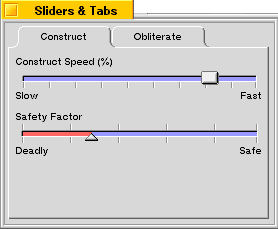

| The Interface Kit Table of Contents | The Interface Kit Index |
Derived from: public BView
Declared in: be/interface/TabView.h
Library: libbe.so
The tab view is a fairly common construct in modern user interfaces. The BTabView class serves as a container for a series of BTab objects as well as their target views; the tabs run horizontally across the top of the view from left to right, and beneath them is a container view in which the currently-selected tab's target view is presented. A box is drawn around the container view to clearly define the relationship between the tabs and the container view.
In the figure below, we see a window that contains a BTabView with two BTab objects attached, called "Construct" and "Obliterate." The "Construct" tab is currently selected, and its target view is visible. The target view for the "Construct" tab contains two BSlider objects (these sliders are used as an example in the BSlider section and you can learn more about them there).

The BTabView in this window is constructed using the following code, which can be used in the constructor of the parent window:
BRect r;
BTabView *tabView;
BTab *tab;
r = Bounds();
r.InsetBy(5,5);
tabView = new BTabView(r, "tab_view");
tabView->SetViewColor(216,216,216,0);
r = tabView->Bounds();
r.InsetBy(5,5);
r.bottom -= tabView->TabHeight();
tab = new BTab();
tabView->AddTab(new ConstView(r), tab);
tab->SetLabel("Construct");
tab = new BTab();
tabView->AddTab(new DestView(r), tab);
tab->SetLabel("Obliterate");
This code creates a BTabView, then sets its view color to the shade of grey used by standard BTabView and BTab objects.
Notice that the frame rectangle for the tabs' target views is being computed by taking the bounds rectangle of the BTabView, insetting it by five pixels on each side (to leave some room between it and the bounding box of the BTabView), and subtracting the tab height from the bottom edge of the rectangle. This places the target view inside the tab view. You can adjust this computation to position the target view to your liking.
Then two BTab objects are created and added to the BTabView. The ConstView and DestView classes are derived from BView and represent the "Construct" and "Obliterate" panels of the window (including the various controls contained in those panels).
When the user clicks the "Obliterate" tab, the window will change to look like this:
AddTab()
Can be augmented to assist in setting up tabs as they're added to the BTabView.
Draw()
Draws the BTabView. Can be augmented or reimplemented to customize the appearance of the view.
DrawBox()
Draws the box that surrounds the container view. Can be augmented or reimplemented to customize the appearance of the view.
DrawTabs()
Draws all the tabs in the BTabView. Can be augmented or reimplemented to customize the appearance of the view.
MakeFocus()
Makes the BTabView the focus view, or removes the focus from the BTabView. Can be augmented to take any additional action necessary when this transition occurs.
RemoveTab()
Removes a tab from the BTabView. Can be augmented to perform any additional action necessary.
Select()
Changes the currently-selected tab. Can be augmented to perform any additional action necessary.
SetFocusTab()
Shifts the focus from one tab to another within the BTabView. Can be augmented to perform whatever additional action may be needed when the tab focus changes.
SetTabHeight()
Sets the height of the BTabView's tabs. Can be augmented to perform additional actions.
SetTabWidth()
Sets the width of the tabs. Can be augmented to perform whatever added functions are necessary.
TabAt()
Returns a pointer to a specific BTab object. Can be augmented to perform whatever added functions are necessary.
TabFrame()
Returns the frame rectangle for a given tab. Can be augmented to adjust the frame rectangle for customization of the appearance of your BTabView.
|
Initializes the BTabView to the frame rectangle, stated in its eventual parent's coordinate system, and assigns it the specified name, resizing mode, and flags. These are described in detail in the BView section.
The width parameter, which can be one of the following values, specifies the widths of the tabs in the BTabView. All tabs in a BTabView are the same width.
The container view for the BTabView's subviews is created and added to the BTabView as well.
|
Frees all memory the BTabView allocated, and deletes every BTab attached to it.
|
Returns a new BTabView object, allocated by new and created with the version of the constructor that takes a BMessage archive. However, if the message doesn't contain archived data for a BTabView, Instantiate() returns NULL.
See also: BArchivable::Instantiate(), instantiate_object(), Archive()
|
AddTab() adds the specified tab as the rightmost tab in the BTabView. The new tab's target view is set to target.
If tab is NULL, a new BTab object is constructed and added to the BTabView. You can get a pointer to the new tab using the TabAt() function
If you choose to reimplement AddTab(), you should call the inherited form of this function once the BTab has been customized.
RemoveTab() removes the tab with the specified index number from the BTabView and returns a pointer to the BTab object. The BTab is not deleted—if you don't need it anymore, you can do that yourself.
|
Calls the inherited version of Archive() and stores the BTabView in the BMessage archive.
See also: BArchivable::Archive(), Instantiate() static function
|
Calls BView::AttachedToWindow(), then selects the first tab in the tab view.
See also: BView::AttachedToWindow()
|
Draws the tabs and the box that encloses the container view that displays the selected tab's target view.
|
Draws the box that encloses the container view. selTabRect is the frame rectangle of the currently-selected tab; this information is used to allow the box to attach properly to the current tab. This is the same rectangle that the DrawTabs() function returns.
This is called for you by the Draw() function and is provided primarily as a hook for customizing the appearance of your BTabView.
|
Draws all the tabs in the BTabView and returns the frame rectangle of the currently-selected tab. This rectangle should then be passed to DrawBox() to draw the container view's enclosing box.
This is called for you by the Draw() function and is provided primarily as a hook for customizing the appearance of your BTabView.
|
The KeyDown() function handles keyboard navigation of the BTabView; the down and left arrow keys move the focus to the left, and the up and right arrow keys move the focus to the right. The space bar and enter keys select the focused tab.
All other keys are passed through to the BView::KeyDown() function for further processing.
See also: the Keyboard Information appendix, "B_KEY_DOWN" in the Message Protocols appendix, BView::KeyDown(), modifiers()
|
Makes the BTabView the current focus by first calling BView::MakeFocus(), then making the currently-selected tab the focus of the BTabView.
See also: BView::MakeFocus()
|
Identifies which tab (if any) the user clicked and selects that tab. If the mouse was not inside a tab when clicked, the BView::MouseDown function is called.
See also: "B_MOUSE_DOWN" in the Message Protocols appendix, GetMouse()
|
Select() selects the tab specified by its index number, first deselecting the previously-selected tab.
Selection() returns the index number of the currently-selected tab.
|
SetFocusTab() sets the focus state of the specified tab. If focused is true, the specified tab becomes the new focus; if focused is false, the focus is removed from the currently-focused tab but no new focus is set (the BTabView becomes focusless).
FocusTab() returns the index number of the tab that is currently the focus.
|
SetTabHeight() sets the height of the tabs in the BTabView. TabHeight() returns the current tab height.
When you change the tab height, the container view for the target views is resized so that the BTabView doesn't change size. Making the tabs taller by N pixelscauses the container view's top edge to move down by N pixels, and decreasing the heights of the tabs increases the height of the container view.
|
SetTabWidth() sets the width of the tabs in the BTabView, and TabWidth() returns the current width setting. width must be one of the following values:
| B_WIDTH_FROM_WIDEST | Each tab's width is determined based upon the width of the widest tab name.. |
| B_WIDTH_AS_USUAL | The default tab width is used for all tabs. |
|
Returns a pointer to the BTab object at the specified index. The leftmost tab is index number 0.
|
Returns the frame rectangle of the tab whose index number is specified. The leftmost tab is index number 0.
See also: DrawTabs(), DrawBox(), Draw()
|
Calls the inherited version of WindowActivated(), then calls DrawTabs() to redraw the tabs.
See also: BWindow::WindowActivated()
The Archive() function adds the following fields to its BMessage argument:
| Field | Type code | Meaning |
|---|---|---|
| "_high" | B_FLOAT_TYPE | The height of the tabs. |
| "_but_width" | B_INT16_TYPE | The tab width value. |
| "_sel" | B_INT32_TYPE | Which tab is selected. |
The archived tabs are added to the "_l_items" field (deep copy only). The tabs' target views are added to the "_views" field (deep copy only), with the leftmost tab inserted first in the "_views" array, and the rightmost tab inserted last.
| The Interface Kit Table of Contents | The Interface Kit Index |
Copyright © 2000 Be, Inc. All rights reserved..